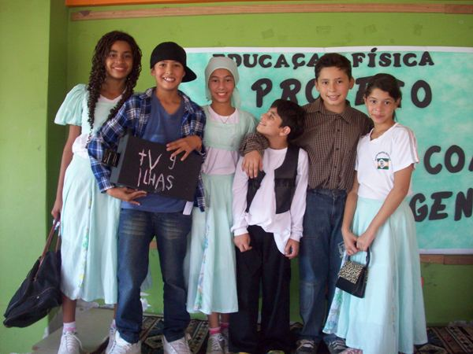
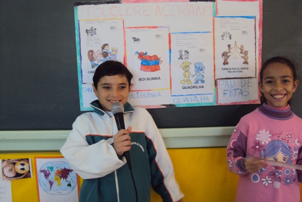
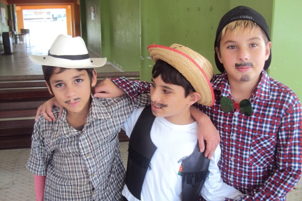
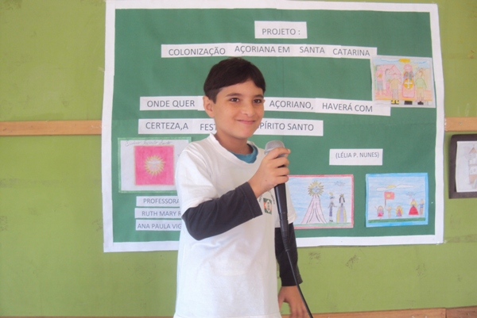
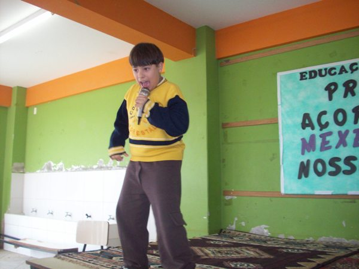

EBM Ivone T. Garcia participa da Semana Nacional da Pessoa com Deficiência Intelectual e Múltipla
27 Agosto, 2012
|
Pensando em trabalhar o tema inclusão Social, a E.B.M. Profª Ivone Teresinha Garcia, durante o primeiro semestre desenvolveu o projeto intitulado AÇORES: MEXENDO COM NOSSAS ORIGENS com os alunos do 5º ano matutino, desenvolvido pela professora de Educação Física, Ruth Rutes. O projeto contou com: - Viagem de estudo a São Francisco do Sul -Participação nas socializações de temas do projeto para a comunidade escolar -Participação nas aulas de danças folclóricas -Participação na apresentação final de danças folclóricas à escola -Participação em peças teatrais -Confecção de cartazes sobre o tema e socialização com colegas da turma - Debate Todos os alunos participaram ativamente das atividades planejadas sendo que algumas foram adequadas para que houvesse uma integração contínua, uma vez que a turma conta com a presença de um aluno com deficiência. Também foi desenvolvido pelo terceiro ano consecutivo o projeto "TALENTOS NA ESCOLA", neste último dia 10 foram realizadas as apresentações. Todos os alunos tiveram importante participação através da dança e da música. Abaixo fotos do evento:      |